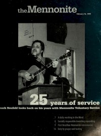

Chuck Neufeld
 14 July 1987 The Mennonite |
 16 February 1999 The Mennonite |
Media coverage
- 1 Apr 1975 in The Mennonite "Festival starts Jubilee study, action idea"
- 14 Jul 1987 in The Mennonite "[Cover Description]: Elsa Gonzales and Chuck Neufeld lead conference delegates in singing at Saskatoon '86."
- 10 Jul 1990 in Gospel Herald "mennoscope: Neufeld records fifth album"
- 24 Jul 1990 in The Mennonite "Resources: Chuck Neufeld [photo]"
- 8 Aug 1995 in Gospel Herald "WICHITA 95: Musical arts marked by variety and soul", by Dave Wert
- 16 Feb 1999 in The Mennonite "A Search For Home: Chuck Neufeld looks back on 25 years with Mennonite Voluntary Service", by Melanie A. Zuercher
Albums & reviews:
1980: Ropes and Yoke-Bars
- 30 Sep 1980 in The Mennonite, by Jude Krehbiel
- Apr 1983 in The Other Side, by Natalie Zett
1982: On The Other Hand...
- 4 Jan 1983 in The Mennonite, by Jean Garvin
- Apr 1983 in The Other Side, by Natalie Zett
© 2011 CMnexus. Last updated August 2025. Contact: editor -AT- cmnexus -DØT- org